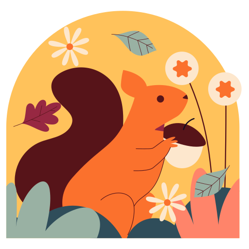
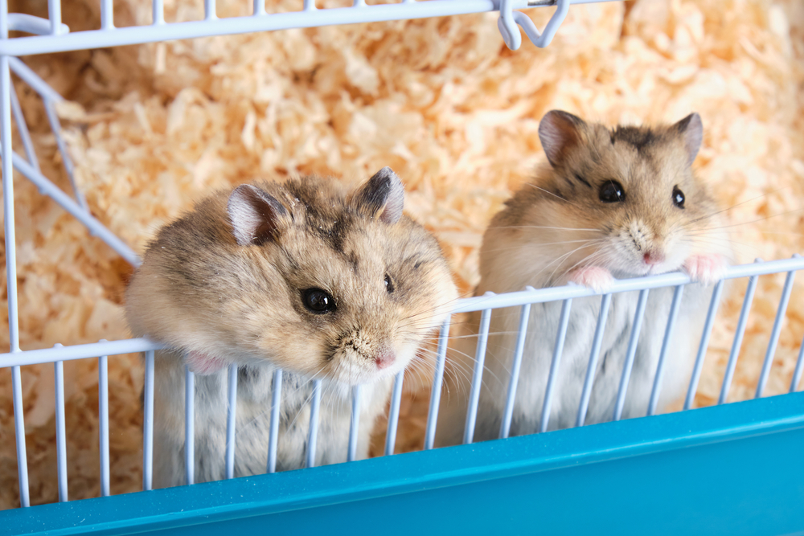
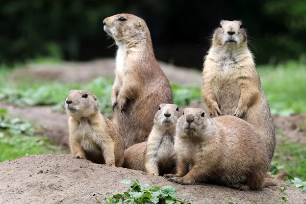
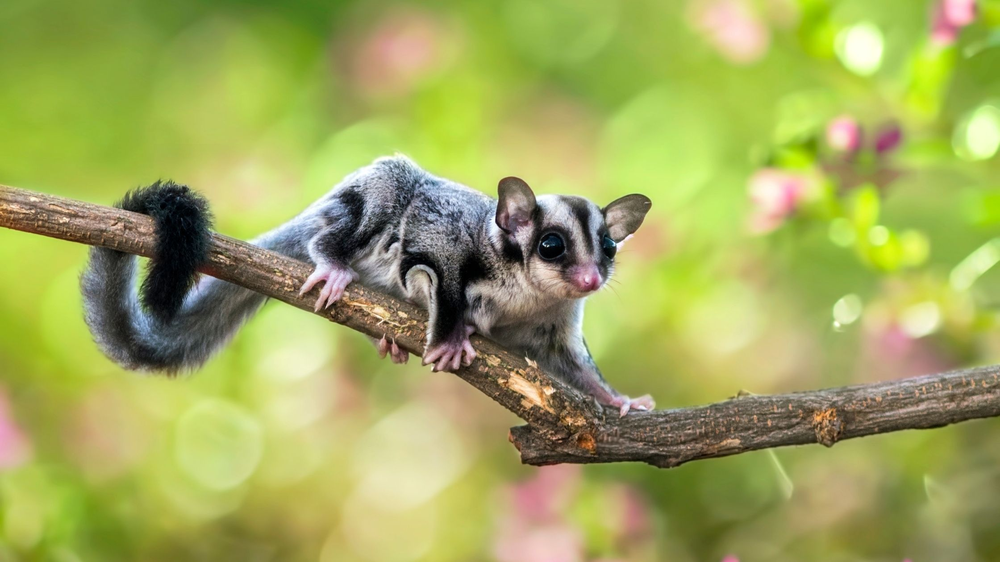

I criceti sono tra i piccoli roditori più popolari. Esistono diverse specie, come il Criceto Dorato (più grande e solitario) o i Criceti Russi/Rovorosky (più piccoli).
- Se vuoi sapere di più sui criceti cliccare sull'emoji 🐹 o dall'indice in alto.
Guida specifica a Criceti, Cani della prateria e Petauri dello Zucchero


I criceti sono tra i piccoli roditori più popolari. Esistono diverse specie, come il Criceto Dorato (più grande e solitario) o i Criceti Russi/Rovorosky (più piccoli).

I cani della prateria sono piccoli roditori sociali originari delle vaste distese erbose del Nord America. Sono animali estremamente intelligenti, esigenti e profondamente sociali.

Il Petauro dello Zucchero non è un roditore, ma un marsupiale. È noto per la sua membrana che gli permette di planare da un albero all'altro.